Chapter 17 Figure 2
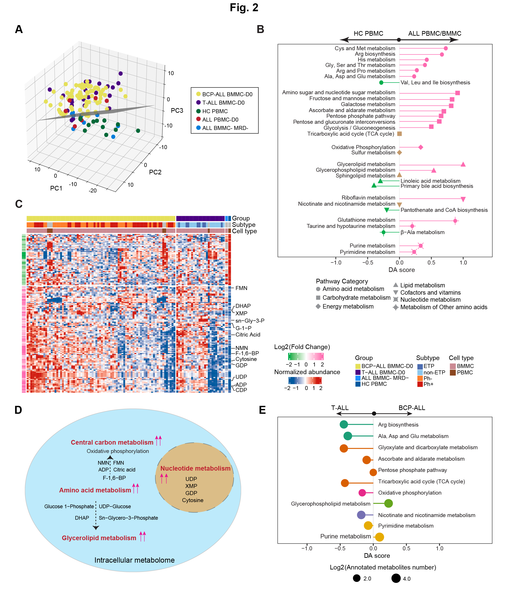
Figure 2: Intracellular metabolome reveals aberrant metabolic profiles underlying the pathogenesis of ALL.
A. PCA of intracellular samples from all groups (n=127) reveals a plane (depicted schematically in gray) that distinguishes most cases of the ALL groups from the control (HC PBMC and ALL BMMC MRD-) group.
B. The DA score reveals the enrichment of metabolism pathways (each row) linked to ALL-associated metabolites, and captures the average gross changes for all metabolites in a pathway. A score 1 or −1 indicates that all measured metabolites in the pathway are increased or decreased in the ALL compared to HC samples. Here pathways containing no less than three measured metabolites with fold change of 1.2 and filtered by P < 0.05 were used for DA score calculation. Activity levels of pathway are color coded: pink for upregulated, green for downregulated, otherwise colored in brown.
C. The intracellular metabolome landscape reveals that most disturbed metabolites were upregulated in ALL, consistent with the data in Extended Data Fig. 3d-e; and the profile within the two groups is consistent with panel (a). The columns represent samples, and rows represent metabolites, with highlighted metabolites in Extended Data Fig. 3f. FMN: Flavin Mononucleotide; DHAP: Dihydroxyacetone Phosphate; NMN: Nicotinamide Mononucleotide; F-1,6-BP: Fructose 1,6−bisphosphate; G-1-P: Glucose 1−Phosphate; sn−Gly−3-P: sn−Glycero−3−phosphat.
D. A simplified schematic plot illustrates the globally upregulated metabolism pathways in ALL blasts.
E. A specific comparison between BCP-ALL and T-ALL cases elucidates the pathways enriched with significantly differential metabolites. The colors represent metabolic pathway categories and the size of each circle reflects the quantity of measured metabolites in indicated pathway.
17.1 (A) 3D PCA
PCA of intracellular samples from all groups (n=127) reveals a plane (depicted schematically in gray) that distinguishes most cases of the ALL groups from the control (HC PBMC and ALL BMMC MRD-) group.
library(dplyr)
library(ggplot2)
library(scatterplot3d)
#-------------------------------------------------------------------------------
# Step 1: Load data and set parameters
#-------------------------------------------------------------------------------
dat <- data.table::fread("raw_data/cell_dat_final_reuslt_v0329.txt") %>%
as.data.frame() %>%
tibble::column_to_rownames("label") %>%
dplyr::filter(!is.na(`RJ-19058_METc_BM_MRD-`))
sample_lineage <- readxl::read_excel("raw_data/sample_clinical_201_info.xlsx") %>%
dplyr::select(Pid,Lineage) %>%
as.data.frame()
sample_info <- data.frame(sample=names(dat)) %>%
dplyr::mutate(type=ifelse(grepl("METc_BM_D0",sample),"BM_D0",
ifelse(grepl("METc_PB_D0",sample),"ALL PBMC",
ifelse(grepl("H",sample),"HC PBMC",
ifelse(grepl("METc_BM_MRD",sample),"MRD-",sample))))) %>%
dplyr::mutate(Pid=sample) %>%
tidyr::separate(Pid,sep="_","Pid") %>%
dplyr::left_join(sample_lineage,by="Pid") %>%
dplyr::mutate(type=ifelse(type=="BM_D0",Lineage,type))
#-------------------------------------------------------------------------------
# Step 2: 3D PCA
#-------------------------------------------------------------------------------
dd_pca <- dat %>%
log1p()
pca <- stats::prcomp(t(dd_pca), center = TRUE, scale. = TRUE)
variance = pca$sdev^2/sum(pca$sdev^2)
pca.data = data.frame(pca$x,group=sample_info$type,label=rownames(pca$x))
p2 <- ggplot(pca.data,aes(PC1,PC2,color=group))+
geom_point()+
theme_bw()+
stat_ellipse( linetype = 2, size = 0.5,level=0.9)+
theme(panel.grid.major = element_blank(),panel.grid.minor = element_blank())+
labs(x=paste0("PC1 (",signif(variance[1]*100,3),"%)"),
y=paste0("PC2 (",signif(variance[2]*100,3),"%)"))
pdf("result/Figure2/2A_3Dpca.pdf",width=13,height = 13)
col1 <- c("#BE1E2D","#E5E059","#006838","#007DDB","#4B0082") # B T
sample_info$type <- as.factor(sample_info$type)
colors <- col1[as.numeric(sample_info$type)]
scatterplot3d(pca.data[,c(2,1,3)],pch = 16, cex.symbols = 2,
scale.y = 0.7, angle = 45,
col.axis = "#444444", col.grid = "#CCCCCC", color=colors)
legend("topleft", legend = levels(sample_info$type),
col = c("#BE1E2D","#E5E059","#006838","#007DDB","#4B0082"),
pch = 16, xpd = TRUE,horiz = TRUE)
dev.off()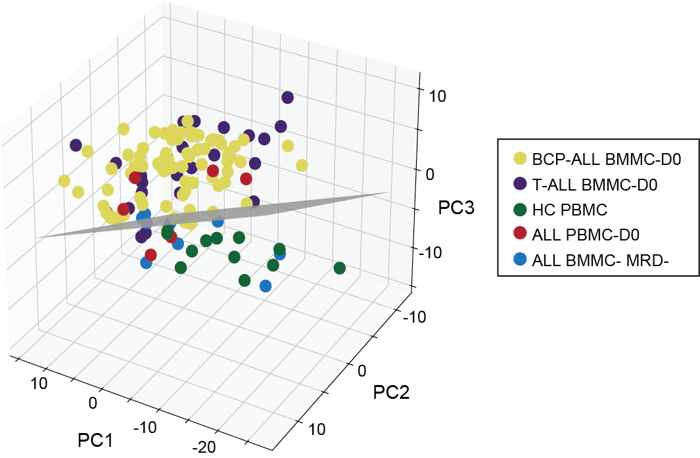
17.2 (B) ALL vs HC
The DA score reveals the enrichment of metabolism pathways (each row) linked to ALL-associated metabolites, and captures the average gross changes for all metabolites in a pathway. A score 1 or −1 indicates that all measured metabolites in the pathway are increased or decreased in the ALL compared to HC samples. Here pathways containing no less than three measured metabolites with fold change of 1.2 and filtered by P < 0.05 were used for DA score calculation. Activity levels of pathway are color coded: pink for upregulated and green for downregulated. For detailed information of the metabolites, please refer to Supplementary Table 12.
library(dplyr)
library(ggplot2)
library(ggpubr)
library(ComplexHeatmap)
library(MNet)
#------------------------------------------------------------------------------
# Step 1: Load data and set parameters
#------------------------------------------------------------------------------
sample_info_temp <- readxl::read_excel("raw_data/sample_clinical_201_info.xlsx") %>%
as.data.frame()
sample_info_1 <- sample_info_temp %>%
dplyr::filter(!is.na(METc_BM_D0_ID)) %>%
dplyr::select(METc_BM_D0_ID) %>%
dplyr::rename("id"="METc_BM_D0_ID") %>%
dplyr::select(id)
sample_info_2 <- sample_info_temp %>%
dplyr::filter(!is.na(METc_PB_D0_ID)) %>%
dplyr::rename("id"="METc_PB_D0_ID") %>%
dplyr::select(id)
sample_info_1 <- rbind(sample_info_1,sample_info_2)
dat_filter <- data.table::fread("raw_data/cell_dat_final_reuslt_v0329.txt") %>%
as.data.frame() %>%
tibble::column_to_rownames("label") %>%
dplyr::select(sample_info_1$id,starts_with("H"))
#------------------------------------------------------------------------------
# Step 2: mlimma
#------------------------------------------------------------------------------
dat_filter <- log2(dat_filter+1)
dim(dat_filter)
group <- c(rep("tumor",106),rep("normal",12))
table(group)
metabolite_all <- mlimma(dat_filter,group)
write.table(metabolite_all,"result/Figure2/1.BMMCvsHC.txt",quote=F,row.names=F,sep="\t")
metabolite_diff <- metabolite_all %>%
dplyr::filter(abs(logFC) > 0.26) %>%
dplyr::filter(P.Value < 0.05)
write.table(metabolite_diff,"result/Figure2/1.BMMCvsHC_filter.txt",quote=F,row.names=F,sep="\t")
#------------------------------------------------------------------------------
# Step 3: DA-score
#------------------------------------------------------------------------------
diff_MC <- data.table::fread("result/Figure2/1.BMMCvsHC.txt") %>%
as.data.frame() %>%
dplyr::mutate(name=stringr::str_to_title(name))
kid <- openxlsx::read.xlsx("raw_data/cell_metabolite_info_all_v1109.xlsx") %>%
as.data.frame() %>%
dplyr::mutate(refmet_name=stringr::str_to_title(refmet_name))
data_all <- diff_MC %>%
dplyr::left_join(kid,by=c("name"="refmet_name")) %>%
dplyr::filter(KEGG!="None") %>%
dplyr::arrange(desc(logFC))
data <- data_all %>%
dplyr::filter(P.Value < 0.05) %>%
dplyr::mutate(change=ifelse(logFC > 0.26,"increase",
ifelse(logFC < -0.26,"decrease","no sig")))
data_increase <- data %>%
dplyr::filter(change=="increase") %>%
dplyr::pull(KEGG)
data_decrease <- data %>%
dplyr::filter(change=="decrease") %>%
dplyr::pull(KEGG)
da_result <- ePDAlyser(data_increase,data_decrease,data_all$KEGG,
sort_plot ="category",min_measured_num = 3,
out = "metabolite")
a <- ePEAlyser(unique(c(data_increase,data_decrease)),
out="metabolite",p_cutoff = 0.05,test="hypergeo")
Pa <- a$output
da_result_filter <- da_result$result %>%
dplyr::filter(Pathway %in% Pa$name) %>%
dplyr::filter(Measured_members_num > 2) %>%
dplyr::arrange(desc(`Pathway Category`)) %>%
dplyr::mutate(Pathway=factor(Pathway,levels=Pathway)) %>%
dplyr::mutate(da_type=ifelse(DA_score>0,"big",
ifelse(DA_score<0,"little","zero")))
p <- ggplot(da_result_filter)+
geom_point(aes(x=Pathway,y=DA_score,size=log2(Measured_members_num),
color=`da_type`,shape=`Pathway Category`,
fill=`da_type`))+
geom_pointrange(aes(x=Pathway,y=DA_score,ymin=0,ymax=DA_score,color=`da_type`))+
coord_flip()+
theme_bw()+
theme(axis.text.y=element_text(size=8))+
labs(y="Metabolism pathways",x="DA score")+
scale_color_manual(values = c("big"="#FD6AB0","little"="#00AE4C","zero"="gray"))+
scale_fill_manual(values = c("big"="#FD6AB0","little"="#00AE4C","zero"="gray"))+
scale_shape_manual(values=c("Amino acid metabolism"=21,
"Carbohydrate metabolism"=22,
"Energy metabolism"=23,"Lipid metabolism"=24,
"Metabolism of cofactors and vitamins"=25,
"Metabolism of other amino acids"=3,
"Nucleotide metabolism"=4))+
ylim(-1,1)+
scale_size(range = c(3,4))
ggsave("result/Figure2/2B_DAscore_BMMC_ALL.pdf",p,width=22,height=15, units = "cm")
openxlsx::write.xlsx(da_result$result,file="result/Figure2/2B_DAscore_BMMC_ALL.xlsx",rowNames = FALSE)
openxlsx::write.xlsx(da_result_filter,file="result/Figure2/2B_DAscore_BMMC_ALL_filter.xlsx",rowNames = FALSE)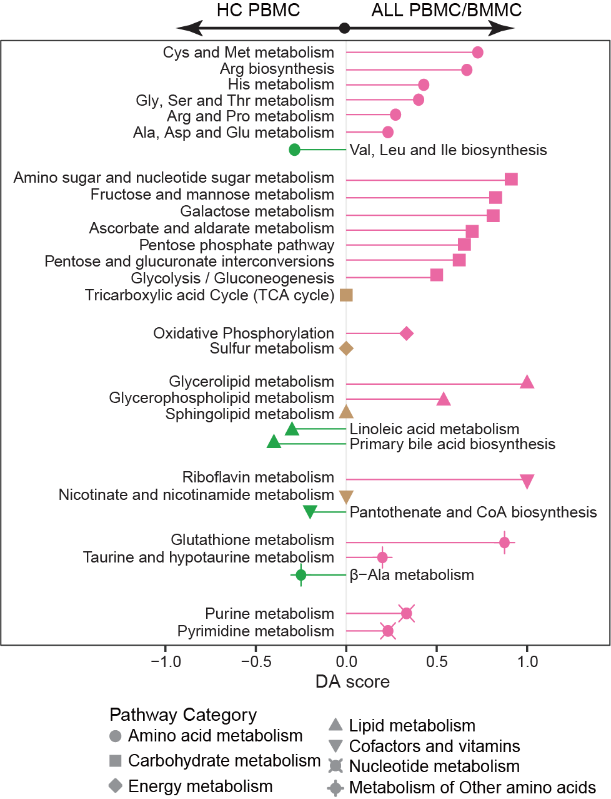
17.3 (C) Intracellular Metabolome Landscape
The intracellular metabolome landscape reveals that most disturbed metabolites were upregulated in ALL, consistent with the data in Extended Data Fig. 3d-e; and the profile within the two groups is consistent with panel (a). The columns represent samples, and rows represent metabolites, with highlighted metabolites in Extended Data Fig. 3f. FMN: Flavin Mononucleotide; DHAP: Dihydroxyacetone Phosphate; NMN: Nicotinamide Mononucleotide; F-1,6-BP: Fructose 1,6−bisphosphate; G-1-P: Glucose 1−Phosphate; sn−Gly−3-P: sn−Glycero−3−phosphate.
library(dplyr)
library(ComplexHeatmap)
library(MNet)
#-------------------------------------------------------------------------------
# Step 1: Load metabolomics data and set parameters
#-------------------------------------------------------------------------------
sample_lineage <- readxl::read_excel("raw_data/sample_clinical_201_info.xlsx") %>%
as.data.frame() %>%
dplyr::select(Pid,Lineage,Subtype)
diff <- data.table::fread("result/Figure2/1.BMMCvsHC.txt") %>%
as.data.frame() %>%
dplyr::filter(abs(logFC)>0.26) %>%
dplyr::filter(P.Value < 0.05) %>%
dplyr::arrange(logFC) %>%
dplyr::mutate(type=ifelse(logFC>0,"Up","Down")) %>%
dplyr::mutate(name=stringr::str_to_title(name))
dat <- data.table::fread("raw_data/cell_dat_final_reuslt_v0329.txt") %>%
as.data.frame() %>%
dplyr::mutate(label=stringr::str_to_title(label)) %>%
dplyr::filter(label %in% diff$name) %>%
dplyr::arrange(match(label,diff$name)) %>%
rowwise() %>%
dplyr::mutate(MRD_mean=mean(c(`RJ-19058_METc_BM_MRD-`,`RJ-19081_METc_BM_MRD-`,`RJ-19102_METc_BM_MRD-`,`RJ-19137_METc_BM_MRD-`,`RJ-19112_METc_BM_MRD-`,`RJ-19004_METc_BM_MRD-`,`RJ-19215_METc_BM_MRD-`,`RJ-19115_METc_BM_MRD-`,`RJ-19124_METc_BM_MRD-`),na.rm=T)) %>%
dplyr::mutate(HC_PBMC_mean=mean(c(H047_PB,H053_PB,H054_PB,H055_PB,H058_PB,H065_PB,H069_PB,H080_PB,H085_PB,H088_PB,H091_PB,H093_PB),na.rm=T)) %>%
as.data.frame() %>%
dplyr::mutate(MRD_mean=ifelse(label=="Citric Acid",NA,MRD_mean)) %>%
tibble::column_to_rownames("label") %>%
log1p() %>%
dplyr::select(-starts_with("H0")) %>%
dplyr::select(-contains("MRD-"))
sample_info <- data.frame(sample=names(dat)) %>%
dplyr::mutate(type=ifelse(grepl("METc_BM_D0",sample),"BM_D0",
ifelse(grepl("METc_PB_D0",sample),"ALL PBMC",sample))) %>%
dplyr::mutate(Pid=sample) %>%
tidyr::separate(Pid,sep="_","Pid") %>%
dplyr::left_join(sample_lineage,by="Pid") %>%
dplyr::mutate(Lineage=ifelse(type %in% c("BM_D0","ALL PBMC"),Lineage,type)) %>%
dplyr::mutate(Subtype=ifelse(type %in% c("BM_D0","ALL PBMC"),Subtype,NA)) %>%
dplyr::mutate(Lineage=ifelse(Lineage=="B","BCP-ALL",
ifelse(Lineage=="T","T-ALL",
ifelse(Lineage=="MRD_mean","MRD- BMMC mean",
ifelse(Lineage=="HC_PBMC_mean","HC PBMC mean",Lineage))))) %>%
dplyr::mutate(Cell_type=ifelse(type %in% c("BM_D0","MRD_mean"),"BMMC",
ifelse(type %in% c("ALL PBMC","HC_PBMC_mean"),"PBMC",NA)))
#-------------------------------------------------------------------------------
# Step 2: Intracellular metabolome landscape heatmap
#-------------------------------------------------------------------------------
dat_scale <- myscale(dat,method="raw_zscore")
mark_gene <- unique(c("Malonic Acid","Cdp","Dtmp","Cytosine","Damp","Adp", "Glucose 1-Phosphate","Dihydroxyacetone Phosphate","Gdp","Deoxyadenosine", "Udp","Citric Acid","Udp-Glucose","Fgar","Xmp","Ribulose 5-Phosphate","Xylulose 5-Phosphate","Fmn","Adp","Nicotinamide Ribotide","Fructose 1,6-Bisphosphate","Sn-Glycero-3-Phosphate","Ribulose 5-Phosphate","Xylulose 5-Phosphate"))
length(mark_gene)
setdiff(mark_gene,rownames(dat_scale))
gene_pos <- as.numeric()
for (i in 1:length(mark_gene)) {
gene_pos_temp <- which(rownames(dat_scale)==mark_gene[i])
gene_pos <- c(gene_pos,gene_pos_temp)
}
length(gene_pos)
right_anno <- rowAnnotation(mark_gene = anno_mark(at = gene_pos, labels = mark_gene))
annotation_file <- readxl::read_excel("raw_data/cell_metabolite_info_all_v1109.xlsx") %>%
as.data.frame() %>%
dplyr::select(refmet_name,class) %>%
dplyr::rename("label"="refmet_name") %>%
dplyr::mutate(label=stringr::str_to_title(label))
left_a <- data.frame(label=rownames(dat_scale)) %>%
dplyr::left_join(annotation_file,by="label") %>%
dplyr::left_join(diff,by=c("label"="name"))
q8 <- RColorBrewer::brewer.pal(n = 8, name = "Paired")
names(q8) <- unique(annotation_file$class)
col_fc = circlize::colorRamp2(c(-2, 0, 2), c("#00AE4C", "white", "#FD6AB0"))
left_annotation = rowAnnotation(Class = left_a$class,
FC=left_a$logFC,
col=list(Class=q8,
FC=col_fc),
show_annotation_name = c(T,T),
border = c(T,T) ,
simple_anno_size = unit(4, "mm"),
gap = unit(1, "mm"))
top_annotation = HeatmapAnnotation(
Lineage = sample_info$Lineage,
Subtype=sample_info$Subtype,
Cell_type=sample_info$Cell_type,
col=list(Lineage=c("BCP-ALL"="#E5E059","T-ALL"="#4B0082",
"HC PBMC mean"="#746E15","MRD- BMMC mean"="#1E90FF"),
Subtype=c("Ph"="#D01910","non_Ph"="#FE7F2D","ETP"="#4C6CB0","non_ETP"="#8DC8ED"),
Cell_type=c("PBMC"="#8B4720","BMMC"="#CB8A93")),
show_annotation_name = c(T,T),
border = c(T,T) ,
simple_anno_size = unit(4, "mm"),gap = unit(1, "mm"))
col_fun = circlize::colorRamp2(c(-1.5, 0, 1.5), c("#00599F", "white", "#D01910"))
p_metabolite <- Heatmap(dat_scale,height=unit(15,"cm"),name="Metabolite Data",
top_annotation =top_annotation,
left_annotation = left_annotation,
right_annotation = right_anno,
row_split = factor(diff$type,levels=c("Down","Up")),
cluster_row_slices = F,
column_split = factor(sample_info$Lineage,levels = c("BCP-ALL","T-ALL","MRD- BMMC mean","HC PBMC mean")),
cluster_column_slices = F,
show_row_dend = FALSE,
show_column_dend = FALSE,
col = col_fun,
show_column_names = F,
show_row_names = F,
row_names_gp = gpar(fontsize = 2),column_names_gp = gpar(fontsize = 5))
pdf("result/Figure2/2C_heatmap.pdf",width=15,height = 8)
p_metabolite
dev.off()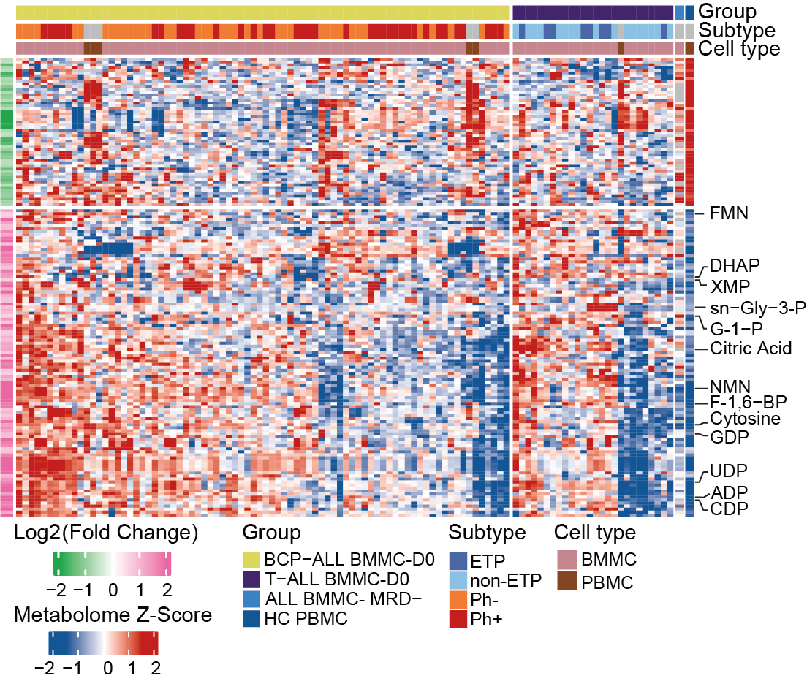
17.4 (E) BCP-ALL vs T-ALL
A specific comparison between BCP-ALL and T-ALL cases elucidates the pathways enriched with significantly differential metabolites. The colors represent metabolic pathway categories and the size of each circle reflects the quantity of measured metabolites in indicated pathway.
library(dplyr)
library(MNet)
library(ggplot2)
library(tidymass)
#-------------------------------------------------------------------------------
# Step 1: Load data and conduct variance analysis
#-------------------------------------------------------------------------------
sample_info <- readxl::read_excel("raw_data/sample_clinical_201_info.xlsx") %>%
as.data.frame() %>%
dplyr::filter(!is.na(METc_BM_D0_ID)) %>%
dplyr::select(METc_BM_D0_ID,Lineage) %>%
dplyr::mutate(Lineage=ifelse(Lineage=="B","BCP-ALL",
ifelse(Lineage=="T","T-ALL",Lineage))) %>%
dplyr::filter(Lineage %in% c("BCP-ALL","T-ALL"))
dat <- data.table::fread("raw_data/cell_dat_final_reuslt_v0329.txt") %>%
as.data.frame() %>%
dplyr::select(label,all_of(sample_info$METc_BM_D0_ID)) %>%
tibble::column_to_rownames("label")
group <- sample_info$Lineage
group[which(group=="BCP-ALL")] <- "tumor"
group[which(group=="T-ALL")] <- "normal"
metabolite_all <- mlimma(log2(dat+1),group)
metabolite_diff <- metabolite_all %>%
dplyr::filter(abs(logFC) > 0.26) %>%
dplyr::filter(P.Value < 0.05)
write.table(metabolite_all,"result/Figure2/2E_BvsT_all.txt",quote=F,row.names=F,sep="\t")
write.table(metabolite_diff,"result/Figure2/2E_BvsT_diff.txt",quote=F,row.names=F,sep="\t")
kid <- readxl::read_excel("raw_data/cell_metabolite_info_all_v1109.xlsx") %>%
as.data.frame() %>%
dplyr::select(refmet_name,KEGG)
data_all <- metabolite_all %>%
dplyr::left_join(kid,by=c("name"="refmet_name")) %>%
dplyr::filter(KEGG!="None") %>%
dplyr::pull(KEGG)
dat <- metabolite_all %>%
dplyr::left_join(kid,by=c("name"="refmet_name")) %>%
dplyr::filter(KEGG!="None") %>%
dplyr::filter(P.Value < 0.05) %>%
dplyr::mutate(change=ifelse(logFC > 0.26,"increase",
ifelse(logFC < -0.26,"decrease","no sig")))
data_increase <- dat %>%
dplyr::filter(change=="increase") %>%
dplyr::pull(KEGG)
data_decrease <- dat %>%
dplyr::filter(change=="decrease") %>%
dplyr::pull(KEGG)
#-------------------------------------------------------------------------------
# Step 2: DA score
#-------------------------------------------------------------------------------
da_result <- ePDAlyser(data_increase,data_decrease,data_all,sort_plot="category",
min_measured_num = 2,out="metabolite")
ggsave(da_result$p,filename = "result/Figure2/2E_DA_score_all.pdf",width=13,height=9)
openxlsx::write.xlsx(da_result$result,file="result/Figure2/2E_DA_score_all.xlsx",rowNames = FALSE)
diff.kid <- metabolite_all %>%
dplyr::filter(P.Value <0.05) %>%
dplyr::filter(logFC > 0.26 | logFC < -0.26) %>%
dplyr::left_join(kid,by=c("name"="refmet_name")) %>%
dplyr::filter(KEGG!="None") %>%
dplyr::pull(KEGG) %>%
unique()
data("kegg_hsa_pathway", package = "metpath")
pathway_class = metpath::pathway_class(kegg_hsa_pathway)
remain_idx = pathway_class %>%
unlist() %>%
stringr::str_detect("Disease") %>%
`!`() %>%
which()
pathway_database = kegg_hsa_pathway[remain_idx]
result <- enrich_kegg(query_id = diff.kid,
query_type = "compound",
id_type = "KEGG",method = "hypergeometric",
pathway_database = pathway_database,
p_cutoff = 0.05,
p_adjust_method = "BH",
threads = 5)
msea_table <- result@result %>% dplyr::arrange(p_value) %>% data.frame()
tablefilter <- dplyr::filter(msea_table,p_value < 0.05)
write.csv(msea_table,"result/Figure2/2E.MSEA_all.csv")
da_filter <- da_result$result %>%
dplyr::filter(KEGG_pathwayid %in% tablefilter$pathway_id) %>%
dplyr::arrange(`Pathway Category`) %>%
dplyr::mutate(Pathway=factor(Pathway,levels = Pathway))
pathway_data <- PathwayExtendData %>%
dplyr::filter(type=="metabolite")
colp <- c("Amino acid metabolism" ="#1B9E77",
"Carbohydrate metabolism"="#D95F02",
"Glycan biosynthesis and metabolism"="#1F78B4",
"Metabolism of cofactors and vitamins"="#7570B3",
"Metabolism of terpenoids and polyketides"="#BC80BD",
"Metabolism of other amino acids"="#8DD3C7",
"Energy metabolism"="#E7298A","Lipid metabolism"="#66A61E",
"Nucleotide metabolism"="#E6AB02",
"Biosynthesis of other secondary metabolites"="#A6761D",
"Xenobiotics biodegradation and metabolism"="#666666")
p <- ggplot(da_filter)+
geom_point(aes(x=Pathway,y=DA_score,size=log2(Measured_members_num),color=`Pathway Category`))+
geom_pointrange(aes(x=Pathway,y=DA_score,ymin=0,ymax=DA_score,color=`Pathway Category`))+
scale_color_manual(values=colp)+
coord_flip()+
xlab(NULL)+
theme_bw()
ggsave("result/Figure2/2E_DAscore_BCPvsT-ALL.pdf",p,width=8,height = 4)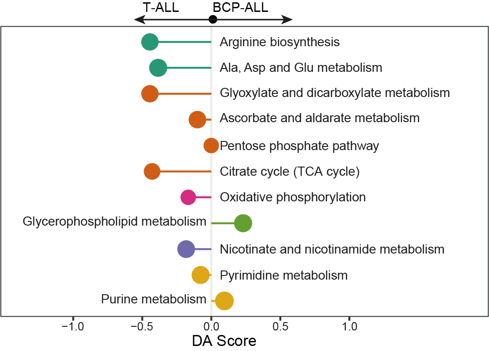
17.5 (S3 A) Correlation Within BMMC Samples
The correlation coefficient (R) plot among BMMC samples, calculated using metabolites abundance. The lower R value is considered as reflecting higher heterogeneity within a given sample pool, and the R of 0.8 is highlighted on the y-axis with a brown line. The median R of each box is 0.863, 0.890, and 0.859, respectively. Statistical significance was determined using Wilcoxon test. **** P < 0.0001.
library(dplyr)
library(MNet)
library(ggplot2)
library(ggpubr)
#-------------------------------------------------------------------------------
# Step 1: Load data and set parameters
#-------------------------------------------------------------------------------
sample_info <- readxl::read_excel("raw_data/sample_clinical_201_info.xlsx") %>%
as.data.frame() %>%
dplyr::filter(!is.na(METc_BM_D0_ID))
dat <- data.table::fread("raw_data/cell_dat_final_reuslt_v0329.txt") %>%
as.data.frame() %>%
tibble::column_to_rownames("label")
sample_b <- sample_info %>%
dplyr::filter(Lineage=="B")
sample_t <- sample_info %>%
dplyr::filter(Lineage=="T")
dat_b <- dat %>%
dplyr::select(sample_b$METc_BM_D0_ID) %>%
log1p()
dim(dat_b)
dat_t <- dat %>%
dplyr::select(sample_t$METc_BM_D0_ID) %>%
log1p()
dim(dat_t)
dat_all <- dat %>%
dplyr::select(sample_info$METc_BM_D0_ID) %>%
log1p()
dim(dat_all)
#-------------------------------------------------------------------------------
# Step 2: Spearman
#-------------------------------------------------------------------------------
cor_b <- cor(dat_b,method="spearman") %>%
reshape2::melt() %>%
dplyr::filter(Var1 != Var2) %>%
dplyr::mutate(Var1=as.character(Var1)) %>%
dplyr::mutate(Var2=as.character(Var2)) %>%
dplyr::mutate(sample1=ifelse(Var1 > Var2,Var1,Var2)) %>%
dplyr::mutate(sample2=ifelse(Var1 > Var2,Var2,Var1)) %>%
dplyr::select(sample1,sample2,value) %>%
unique() %>%
dplyr::mutate(type="BCP-ALL")
cor_t <- cor(dat_t,method="spearman") %>%
reshape2::melt() %>%
dplyr::filter(Var1 != Var2) %>%
dplyr::mutate(Var1=as.character(Var1)) %>%
dplyr::mutate(Var2=as.character(Var2)) %>%
dplyr::mutate(sample1=ifelse(Var1 > Var2,Var1,Var2)) %>%
dplyr::mutate(sample2=ifelse(Var1 > Var2,Var2,Var1)) %>%
dplyr::select(sample1,sample2,value) %>%
unique() %>%
dplyr::mutate(type="T-ALL")
print("b")
print(median(cor_b$value))
print("t")
print(median(cor_t$value))
cor_all <- cor(x=dat_b,y=dat_t,method="spearman") %>%
reshape2::melt() %>%
dplyr::mutate(Var1=as.character(Var1)) %>%
dplyr::mutate(Var2=as.character(Var2)) %>%
dplyr::mutate(sample1=ifelse(Var1 > Var2,Var1,Var2)) %>%
dplyr::mutate(sample2=ifelse(Var1 > Var2,Var2,Var1)) %>%
dplyr::select(sample1,sample2,value) %>%
unique() %>%
dplyr::mutate(type="ALL-BvsT")
print("B-T")
print(median(cor_all$value))
cor_result <- rbind(cor_b,cor_t,cor_all)
comparisons <- list( c("ALL-BvsT", "BCP-ALL"),
c("BCP-ALL", "T-ALL"),c("ALL-BvsT", "T-ALL") )
#-------------------------------------------------------------------------------
# Step 3: Boxplot
#-------------------------------------------------------------------------------
p <- ggplot(cor_result,aes(type,value))+
geom_jitter(size=.3,width=.2,color="gray")+
geom_boxplot(color="#D01910",outlier.colour = NA)+
stat_compare_means(comparisons = comparisons)+
theme_bw()+
ylim(c(0.65,1.08))+
labs(x=NULL,y="Correlation coefficient",title="Metabolism")
ggsave("result/Figure2/S3A_Correlation_boxplot.pdf",p,width=4,height = 4)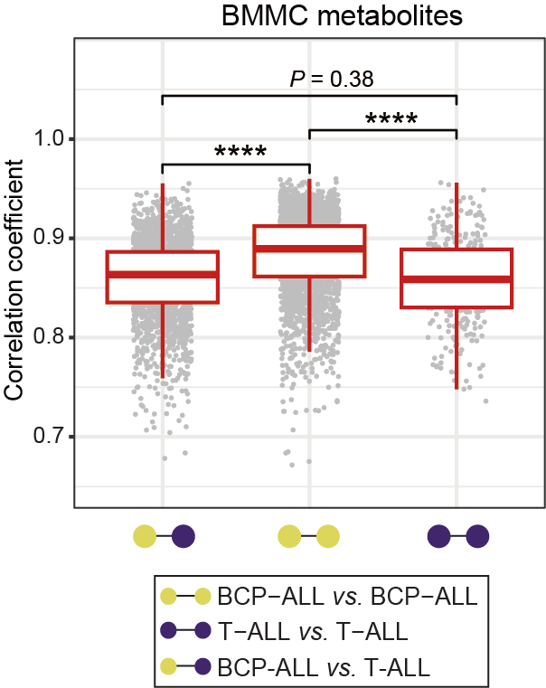
17.6 (S3 B) Correlation Between HC PMMC And ALL BMMC MRD-
The metabolome correlation between HC PMMC (n=12) and ALL BMMC MRD- (n=9) reveals BM MRD- was a transition state for patients to be recognized as near healthy.
library(MNet)
library(dplyr)
library(ggpubr)
#-------------------------------------------------------------------------------
# Step 1: Load data and set parameters
#-------------------------------------------------------------------------------
dat <- data.table::fread("raw_data/cell_dat_final_reuslt_v0329.txt") %>%
as.data.frame() %>%
dplyr::mutate(label=stringr::str_to_title(label)) %>%
dplyr::select(label,contains("H0"),contains("MRD"))
dim(dat)
#-------------------------------------------------------------------------------
# Step 2: Correlation between HC PMMC and ALL BMMC MRD-
#-------------------------------------------------------------------------------
dat_BM_HC <- dat %>%
dplyr::select(contains("MRD")) %>%
log1p()
dim(dat_BM_HC)
dat_PB_HC <- dat %>%
dplyr::select(contains("H0")) %>%
log1p()
dim(dat_PB_HC)
PB_HC_mean <- apply(dat_PB_HC,1,mean)
BM_HC_mean <- apply(dat_BM_HC,1,mean)
dat_mean <- data.frame(PBMC=PB_HC_mean,BMMC=BM_HC_mean)
p <- ggscatter(dat_mean,x="PBMC",y="BMMC",color = "#00599F",
add.params = list(color = "black", fill = "#555555"),add="reg.line",conf.int=TRUE,cor.coef=TRUE,cor.method="spearman")+
xlim(c(4,16))+
ylim(c(4,16))+
xlab("HC PBMC")+
ylab("MRD- BMMC")
ggsave("result/Figure2/S3B_HCvsMRD_cor.pdf",p,width=5.5,height = 5)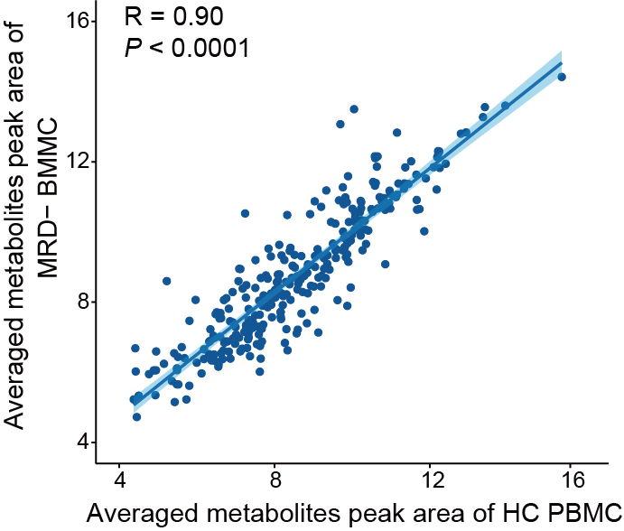
17.7 (S3 C) Correlation Between BMMC And PBMC
The metabolome correlation between BMMC (n=100) and PBMC (PB blast% > 90%, n=6) indicates a high level of similarity between their intracellular metabolic features in patients with ALL.
library(MNet)
library(dplyr)
library(ggpubr)
#-------------------------------------------------------------------------------
# Step 1: Load data and set parameters
#-------------------------------------------------------------------------------
dat <- data.table::fread("raw_data/cell_dat_final_reuslt_v0329.txt") %>%
as.data.frame() %>%
tibble::column_to_rownames("label")
#-------------------------------------------------------------------------------
# Step 2: Correlation between BMMC and PBMC
#-------------------------------------------------------------------------------
dat_PB <- dat %>%
dplyr::select(contains("PB_D0")) %>%
log1p()
dim(dat_PB)
dat_BM <- dat %>%
dplyr::select(contains("BM_D0")) %>%
log1p()
dim(dat_BM)
PB_mean <- apply(dat_PB,1,mean)
BM_mean <- apply(dat_BM,1,mean)
dat_mean <- data.frame(PBMC=PB_mean,BMMC=BM_mean)
p <- ggscatter(dat_mean,x="PBMC",y="BMMC",color = "brown",
add="reg.line",conf.int=TRUE,cor.coef=TRUE,cor.method="spearman")
ggsave("result/Figure2/S3C_PBMCvsBMMC_cor.pdf",p,width=5.5,height = 5)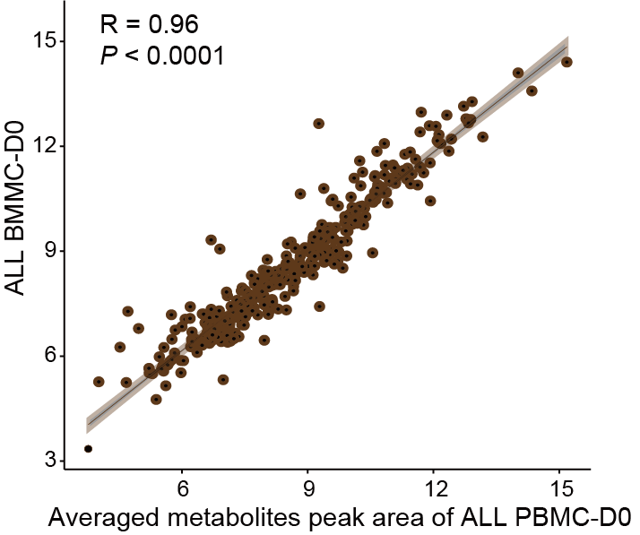
17.8 (S3 D) Differential Analyses
Differential analyses were conducted in HC PBMC (n=12) and ALL PBMC/BMMC (n=106). The significant differential metabolites were identified using the criteria: P < 0.05, log2(Fold change) > abs(0.26).
library(dplyr)
library(ggplot2)
#-------------------------------------------------------------------------------
# Step 1: Set parameters
#-------------------------------------------------------------------------------
mark_gene <- unique(c("Malonic Acid","Cdp","Dtmp","Cytosine","Damp","Adp","Gdp","Deoxyadenosine", "Udp","L-Glutamine","Nicotinamide Ribotide","Fgar","Xmp","Ribulose 5-Phosphate" ,"Xylulose 5-Phosphate","Fmn","Adp","Fumaric Acid","L-Malic Acid","Citric Acid","Sn-Glycero-3-Phosphate","Ribulose 5-Phosphate","Xylulose 5-Phosphate"))
## Differential analysis visualization
mydata <- data.table::fread("result/Figure2/1.BMMCvsHC.txt") %>%
as.data.frame() %>%
dplyr::mutate(Condition=ifelse(logFC > 0.26 & P.Value < 0.05,"Up",
ifelse(logFC < -0.26 & P.Value < 0.05,"Down","Not Sig"))) %>%
dplyr::mutate(Condition=factor(Condition,levels = c("Up","Down","Not Sig"))) %>%
dplyr::mutate(name=stringr::str_to_title(name)) %>%
dplyr::mutate(label=ifelse(name %in% mark_gene,name,NA))
#-------------------------------------------------------------------------------
# Step 2: Volcano plot
#-------------------------------------------------------------------------------
p <- ggplot(mydata,aes(logFC,-log10(P.Value)))+
geom_point(aes(color=Condition),size=2,alpha=0.7)+
geom_vline(xintercept=c(-0.26,0.26), linetype = 'dashed',color="gray")+
geom_hline(yintercept = -log10(0.05),linetype='dashed',color="gray")+
ggrepel::geom_text_repel(aes(label=label),size=1)+
scale_color_manual(values=c("Up"="#FD6AB0","Not Sig"="gray","Down"="#00AE4C"))+
theme_bw()+
theme(panel.grid.major = element_blank(),panel.grid.minor = element_blank())+
labs(x="log2(Fold Change)",y="-log10(P Value)")
ggsave("result/Figure2/S3D_Diff.pdf",p,width=5,height = 4.5)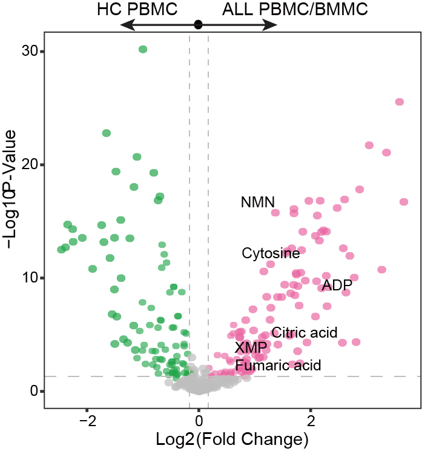
17.9 (S3 E) Volcano Plot of BMMC-D0 vs. MRD-
The volcano plot of BMMC-D0 vs. MRD-, most of the differential metabolites are consistent with panel d.
library(dplyr)
library(ggplot2)
library(MNet)
#-------------------------------------------------------------------------------
# Step 1: Load data and set parameters
#-------------------------------------------------------------------------------
sample <- readxl::read_excel("raw_data/sample_clinical_201_info.xlsx") %>%
as.data.frame()
sample_D0 <- sample %>%
dplyr::filter(!is.na(METc_BM_D0_ID))
sample_MRD <- sample %>%
dplyr::filter(!is.na(`METc_BM_MRD-_ID`))
dat <- data.table::fread("raw_data/cell_dat_final_reuslt_v0329.txt") %>%
dplyr::select(label,all_of(sample_D0$METc_BM_D0_ID),all_of(sample_MRD$`METc_BM_MRD-_ID`)) %>%
dplyr::filter(!is.na(`RJ-19004_METc_BM_MRD-`)) %>%
tibble::column_to_rownames("label")
## Differential analysis
dat <- log2(dat+1)
group <- c(rep("tumor",100),rep("normal",9))
metabolite_all <- mlimma(dat,group)
metabolite_diff <- metabolite_all %>%
dplyr::filter(abs(logFC) > 0.26) %>%
dplyr::filter(P.Value < 0.05)
mark_gene <- unique(c("Cytosine","Adp", "Xmp","Nicotinamide Ribotide","Fumaric Acid"))
mydata <- metabolite_all %>%
as.data.frame() %>%
dplyr::mutate(Condition=ifelse(logFC > 0.26 & P.Value < 0.05,"Up",
ifelse(logFC < -0.26 & P.Value < 0.05,"Down","Not Sig"))) %>%
dplyr::mutate(Condition=factor(Condition,levels = c("Up","Down","Not Sig"))) %>%
dplyr::mutate(name=stringr::str_to_title(name)) %>%
dplyr::mutate(label=ifelse(name %in% mark_gene,name,NA))
#-------------------------------------------------------------------------------
# Step 2: Volcano plot
#-------------------------------------------------------------------------------
p <- ggplot2::ggplot(mydata,ggplot2::aes(logFC,-log10(P.Value)))+
ggplot2::geom_point(ggplot2::aes(color=Condition),size=2,alpha=0.7)+
ggplot2::geom_vline(xintercept=c(-0.26,0.26), linetype = 'dashed',color="gray")+
ggplot2::geom_hline(yintercept = -log10(0.05),linetype='dashed',color="gray")+
ggrepel::geom_text_repel(ggplot2::aes(label=label),size=1)+
ggplot2::scale_color_manual(values=c("Up"="#D01910","Not Sig"="gray","Down"="#00599F"))+
ggplot2::theme_bw()+
ggplot2::theme(panel.grid.major = ggplot2::element_blank(),panel.grid.minor = ggplot2::element_blank())+
ggplot2::labs(x="log2(Fold Change)",y="-log10(P Value)")
ggsave("result/Figure2/S3E_Volcano.pdf",p,width=5,height = 4.5)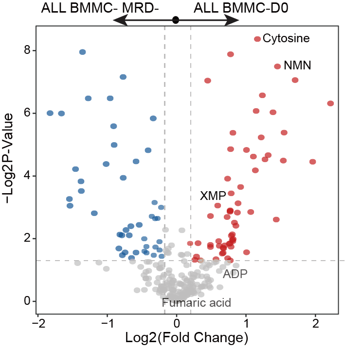
17.10 (S3 F) Abundance Boxplot
The abundance boxplots for significantly disturbed metabolites identified in energy, nucleotide and glycerolipid metabolism.
library(dplyr)
library(MNet)
library(ggplot2)
library(ggpubr)
#-------------------------------------------------------------------------------
# Step 1: Load data and conduct mlimma
#-------------------------------------------------------------------------------
## BMMC vs HC
sample_info_temp <- readxl::read_excel("raw_data/sample_clinical_201_info.xlsx") %>%
as.data.frame()
sample_info_BH <- sample_info_temp %>%
dplyr::filter(!is.na(METc_BM_D0_ID)) %>%
dplyr::select(METc_BM_D0_ID) %>%
dplyr::rename("id"="METc_BM_D0_ID") %>%
dplyr::select(id)
dat_filter_BH <- data.table::fread("raw_data/cell_dat_final_reuslt_v0329.txt") %>%
as.data.frame() %>%
tibble::column_to_rownames("label") %>%
dplyr::select(sample_info_BH$id,starts_with("H"))
dat_filter_BH <- log2(dat_filter_BH+1)
dim(dat_filter_BH)
matching_columns <- grep("BM",colnames(dat_filter_BH),value = T)
length(matching_columns)
length(dat_filter_BH)
group_BH <- c(rep("tumor",100),rep("normal",12))
table(group_BH)
metabolite_BH <- mlimma(dat_filter_BH,group_BH)
write.table(metabolite_BH,"result/Figure2/S3F_BMMCvsHC.txt",quote=F,row.names=F,sep="\t")
## PBMC vs HC
sample_info_temp <- readxl::read_excel("raw_data/sample_clinical_201_info.xlsx") %>%
as.data.frame()
sample_info_PH <- sample_info_temp %>%
dplyr::filter(!is.na(METc_PB_D0_ID)) %>%
dplyr::select(METc_PB_D0_ID) %>%
dplyr::rename("id"="METc_PB_D0_ID") %>%
dplyr::select(id)
dat_filter_PH <- data.table::fread("raw_data/cell_dat_final_reuslt_v0329.txt") %>%
as.data.frame() %>%
tibble::column_to_rownames("label") %>%
dplyr::select(sample_info_PH$id,starts_with("H"))
dat_filter_PH <- log2(dat_filter_PH+1)
dim(dat_filter_PH)
matching_columns <- grep("H",colnames(dat_filter_PH),value = T)
length(matching_columns)
length(dat_filter_PH)
group_PH <- c(rep("tumor",6),rep("normal",12))
table(group_PH)
metabolite_PH <- mlimma(dat_filter_PH,group_PH)
write.table(metabolite_PH,"result/Figure2/S3F_PBMCvsHC.txt",quote=F,row.names=F,sep="\t")
## BMMC vs PBMC
sample_info_temp <- readxl::read_excel("raw_data/sample_clinical_201_info.xlsx") %>%
as.data.frame()
sample_info_BM <- sample_info_temp %>%
dplyr::filter((!is.na(METc_BM_D0_ID))) %>%
dplyr::select(METc_BM_D0_ID) %>%
dplyr::rename("id"="METc_BM_D0_ID") %>%
dplyr::select(id)
sample_info_PB <- sample_info_temp %>%
dplyr::filter(!is.na(METc_PB_D0_ID)) %>%
dplyr::select(METc_PB_D0_ID) %>%
dplyr::rename("id"="METc_PB_D0_ID") %>%
dplyr::select(id)
sample_info_BP <- rbind(sample_info_BM,sample_info_PB)
dat_filter_BP <- data.table::fread("raw_data/cell_dat_final_reuslt_v0329.txt") %>%
as.data.frame() %>%
tibble::column_to_rownames("label") %>%
dplyr::select(sample_info_BP$id)
dat_filter_BP <- log2(dat_filter_BP+1)
matching_columns <- grep("BM", colnames(dat_filter_BP), value = TRUE)
length(matching_columns)
length(dat_filter_BP)
group_BP <- c(rep("tumor",100),rep("normal",6))
table(group_BP)
metabolite_BP <- mlimma(dat_filter_BP,group_BP)
write.table(metabolite_BP,"result/Figure2/S3F_BMMCvsPBMC.txt",quote=F,row.names=F,sep="\t")
#-------------------------------------------------------------------------------
# Step 2: Select significantly disturbed metabolites
#-------------------------------------------------------------------------------
## Significantly disturbed metabolites
name1 <- c("Fructose 1,6-Bisphosphate","Citric Acid","Adp","Nicotinamide Ribotide")
name2 <- c("Gdp","Udp","Xmp","Cytosine")
name3 <- c("Udp-Glucose","Sn-Glycero-3-Phosphate","Glucose 1-Phosphate","Dihydroxyacetone Phosphate")
met_name <- c(name1,name2,name3)
## BMMC vs HC
meta_filter_BH <- metabolite_BH %>%
dplyr::mutate(name=stringr::str_to_title(name)) %>%
dplyr::filter(name %in% met_name) %>%
dplyr::select(P.Value,name) %>%
dplyr::mutate(group=rep("BH",12))
## PBMC vs HC
meta_filter_PH <- metabolite_PH %>%
dplyr::mutate(name=stringr::str_to_title(name)) %>%
dplyr::filter(name %in% met_name) %>%
dplyr::select(P.Value,name) %>%
dplyr::mutate(group=rep("PH",12))
## BMMC vs PBMC
meta_filter_BP <- metabolite_BP %>%
dplyr::mutate(name=stringr::str_to_title(name)) %>%
dplyr::filter(name %in% met_name) %>%
dplyr::select(P.Value,name) %>%
dplyr::mutate(group=rep("BP",12))
meta_filter_all <- rbind(meta_filter_BH,meta_filter_BP,meta_filter_PH) %>%
dplyr::mutate(name=factor(name,levels = met_name)) %>%
dplyr::arrange(name)
write.table(meta_filter_all,"result/Figure2/S3F_meta_groupcomparison.txt",sep = "\t",quote = F,row.names = F)
#-------------------------------------------------------------------------------
# Step 3: Boxplot
#-------------------------------------------------------------------------------
## Load data and set parameters
sample_info1 <- readxl::read_excel("raw_data/sample_clinical_201_info.xlsx") %>%
as.data.frame() %>%
dplyr::filter(!is.na(METc_BM_D0_ID))
sample_info2 <- readxl::read_excel("raw_data/sample_clinical_201_info.xlsx") %>%
as.data.frame() %>%
dplyr::filter(!is.na(METc_PB_D0_ID))
dat <- data.table::fread("raw_data/cell_dat_final_reuslt_v0329.txt") %>%
as.data.frame() %>%
tibble::column_to_rownames("label") %>%
dplyr::select(all_of(sample_info1$METc_BM_D0_ID),all_of(sample_info2$METc_PB_D0_ID),starts_with("H"))
group <- c(rep("A",length(sample_info1$METc_BM_D0_ID)),
rep("P",length(sample_info2$METc_PB_D0_ID)),
rep("HC",length(grep("H",names(dat)))))
dat_filter <- dat %>%
tibble::rownames_to_column("label") %>%
dplyr::mutate(label=stringr::str_to_title(label)) %>%
dplyr::filter(label %in% c(name1,name2,name3)) %>%
tibble::column_to_rownames("label")
dat_filter <- myscale(log2(dat_filter+1),method="raw_zscore")%>%
t() %>%
as.data.frame()
dat_filter$group <- group
dat_melt <- reshape2::melt(dat_filter,id="group")
my_comparisons <- list( c("HC", "P"), c("HC", "A"), c("P", "A") )
## Boxplot
plot_list <- list()
for (i in 1:length(met_name)) {
dat_melt_filter <- dat_melt %>%
dplyr::filter(variable==met_name[i]) %>%
dplyr::mutate(group=factor(group,levels = c("HC","P","A")))
p <- ggplot(dat_melt_filter, aes(x=group,y = value,fill=group)) +
geom_boxplot(outlier.shape = NA)+
geom_point(position = "jitter",size=0.2,alpha=0.8)+
scale_fill_manual(values=c("#007DDB","#D01910","purple"))+
theme_classic()+
theme(legend.position="none")+ylim(-7,7)+
labs(x=NULL,y=NULL,title = unique(dat_melt_filter$variable))
plot_list[[i]] <- p
}
plot_grid <- cowplot::plot_grid(plotlist = plot_list, nrow = 3)
ggsave("result/Figure2/S3F_AbunBoxplot.pdf",plot_grid,width=12,height = 10)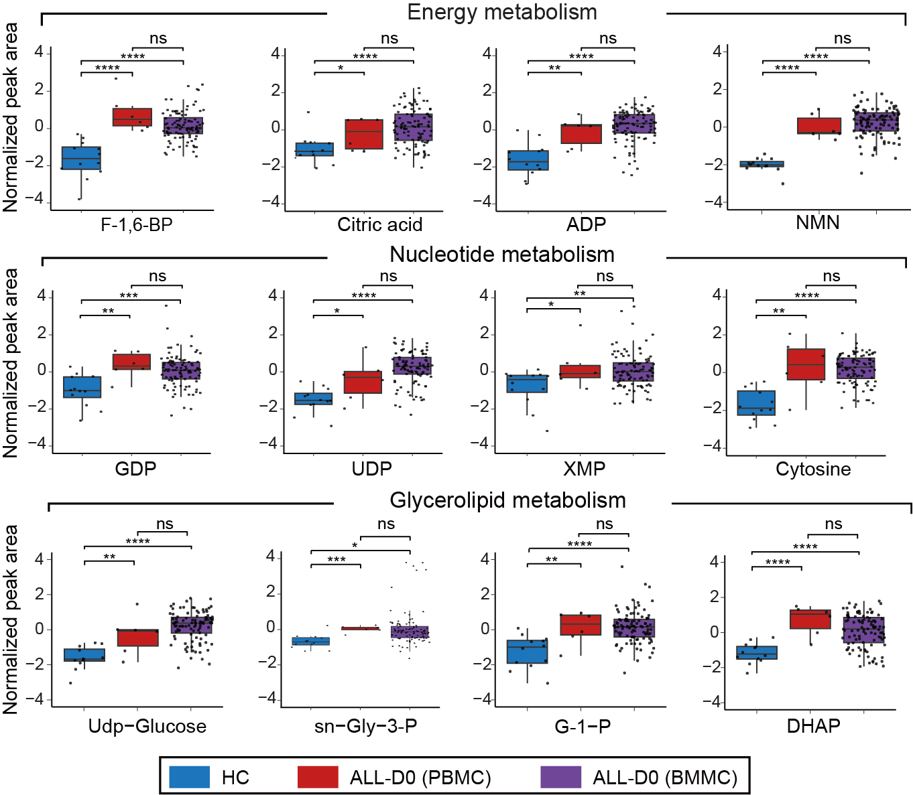
17.11 (S3 G) WGCNA
(left) WGCNA identified 13 metabolite modules (ME01–13) enriched in intracellular metabolomic data for ALL samples. Each network node represents one metabolite, color-coded by the different modules.
(right) Overlay of significantly upregulated/downregulated metabolites between ALL and HC onto the network nodes.
#-------------------------------------------------------------------------------
# Step 1: WGCNA identified 13 metabolite modules (ME01–13) enriched in intracellular metabolomic data for ALL samples.
#-------------------------------------------------------------------------------
library(dplyr)
library(ggplot2)
## data
node.data <- data.table::fread("raw_data/node_position.txt") %>%
as.data.frame()
edge.data <- data.table::fread("raw_data/edge_result.txt") %>%
as.data.frame()
color.module <- c("#CCCCCC","#ecb888","#af88bb","#a032cb","#efbed6","#fc496a","#b6d37f","#589336","#7fd68e","#52c465",
"#3372e0","#84d7f6","#5394c3","#6376b3","#7f6cd7","#c4ceff","#fc9d40","#5c95e0","#cd7560",
"#ff70e4", "#ff8738", "#ffcead","#1cbf8b", "#b76d38", "#1584ff", "#7f006d", "#ffd35f","#E66F73",
"#F57F20","#1DBB95","#9CB79F","#F0B8D2","#A0485E","#A0688E","#C7E1DF","#51B1DF","#6D97D7","#5D6193",
"#CEC3E0","#A9917E","#7C7D80","#F4E192","#ADD666")
color.module <- c("#CCCCCC","#ecb888","#af88bb","#a032cb","#efbed6","#fc496a","#1584ff","#ffd35f","#7fd68e","#52c465",
"#F57F20","#84d7f6","#5394c3","#6376b3","#7f6cd7","#c4ceff","#A0485E")
names(color.module) <- paste0("ME", seq(0,length(color.module)-1))
## plot network
gg <- ggplot()
gg <- gg + geom_segment(mapping = aes(x = from.x, y = from.y, xend = to.x, yend = to.y),
color = "#CCCCCC", size = 0.01, data = edge.data) # draw a straight line
gg <- gg + geom_point(mapping = aes(x = pos.x, y = pos.y, color = Module),
size = 4, data = node.data) # add point
gg <- gg + scale_size(range = c(0, 6) * 2) # specifies the minimum and maximum size
gg <- gg + theme_void()
gg <- gg + labs(x = "", y = "", title = paste0("MMI"))
gg <- gg + scale_colour_manual(values = color.module)
ggsave(paste0("result/Figure2/S3G_WGCNA-Vasualization.pdf"), gg, width = 8, height = 6)
#-------------------------------------------------------------------------------
# Step 2: verlay of significantly upregulated/downregulated metabolites between ALL and HC onto the network nodes.
#-------------------------------------------------------------------------------
## data
result_all <- data.table::fread("result/Figure2/1.BMMCvsHC.txt") %>%
as.data.frame() %>%
dplyr::mutate(Type=ifelse(P.Value < 0.05 & logFC>0,"Up",
ifelse(P.Value < 0.05 & logFC < 0,"Down","No-Sig"))) %>%
dplyr::select(name,Type)
node.data <- data.table::fread("raw_data/node_position.txt") %>%
as.data.frame() %>%
dplyr::left_join(result_all,by=c("label"="name"))
edge.data <- data.table::fread("raw_data/edge_result.txt") %>%
as.data.frame()
## plot network
gg <- ggplot()
gg <- gg + geom_segment(mapping = aes(x = from.x, y = from.y, xend = to.x, yend = to.y),
color = "#CCCCCC", size = 0.01, data = edge.data) # draw a straight line
gg <- gg + geom_point(mapping = aes(x = pos.x, y = pos.y, color = Type), size = 3,
data = node.data[which(node.data$Type == "No-Sig"), ])
gg <- gg + geom_point(mapping = aes(x = pos.x, y = pos.y, color = Type), size = 4.5,
data = node.data[which(node.data$Type != "No-Sig"), ])
gg <- gg + scale_colour_manual(values = c("Down"="#00599F","Up"="#D01910","No-Sig"="#AAAAAA"))
gg <- gg + scale_size(range = c(0, 6) * 2) # specifies the minimum and maximum size
gg <- gg + theme_void()
gg <- gg + labs(x = "", y = "", title = paste0("MMI"))
ggsave(paste0("result/Figure2/S3G_WGCNA-Vasualization-diff.pdf"), gg, width = 8, height = 6)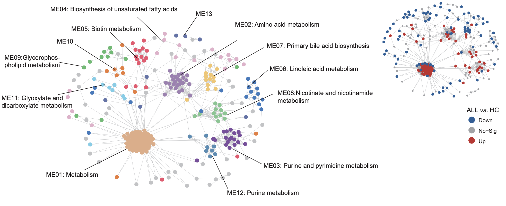
17.12 (S3 H) bar plot
The proportion of metabolites annotated category at each cluster in (g).
library(dplyr)
library(ggplot2)
kid <- readxl::read_excel("raw_data/Supplementary Tables.xlsx",sheet=7,skip=1) %>%
as.data.frame() %>%
dplyr::select(Refmet_name,`Annotated category`)
module <- data.table::fread("raw_data/2.metabolite_module.txt") %>%
as.data.frame() %>%
dplyr::left_join(kid,by=c("V1"="Refmet_name"))
module_sum <- module %>%
dplyr::group_by(moduleLabels,`Annotated category`) %>%
dplyr::summarise(n=n()) %>%
as.data.frame() %>%
dplyr::filter(moduleLabels != 0) %>%
dplyr::arrange(desc(moduleLabels)) %>%
dplyr::mutate(moduleLabels=paste0("ME",moduleLabels)) %>%
dplyr::mutate(moduleLabels=factor(moduleLabels,levels=unique(moduleLabels)))
cols <- c("Amino acids and peptides" ="#1B9E77",
Carbohydrates="#D95F02","Cofactors and Vitamins"="#7570B3",
Energy="#E7298A",Lipids="#66A61E","Nucleic acids"="#E6AB02",
Other="#A6761D",Xenobiotics="#666666")
p <- ggplot(module_sum,aes(x=moduleLabels,y=n,fill=`Annotated category`))+
geom_bar(stat="identity",position = "fill")+
theme_bw()+
scale_fill_manual(values = cols)+
coord_flip()+
labs(x=NULL,y=NULL)
ggsave("result/Figure2/S3H_module-metabolite-annotation.pdf",p,width=5,height = 5)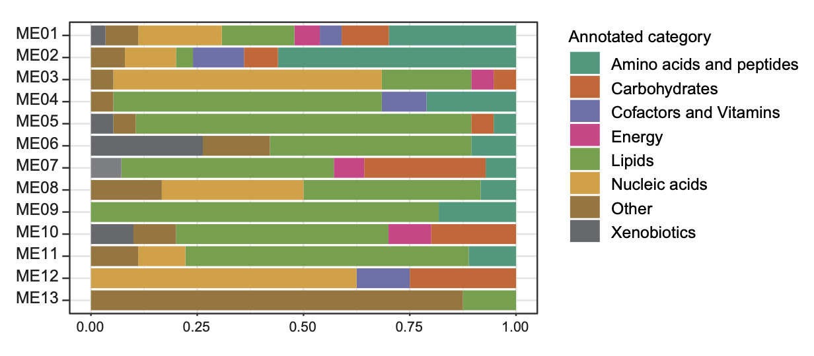
17.13 (S3 I) Venn Diagram
The Venn diagram shows the significantly differential metabolites among defined groups.
library(dplyr)
library(ggplot2)
library(ComplexHeatmap)
library(MNet)
library(ggpubr)
#-------------------------------------------------------------------------------
# Step 1: Load data and set parameters
#-------------------------------------------------------------------------------
sample_info <- readxl::read_excel("raw_data/sample_clinical_201_info.xlsx") %>%
as.data.frame() %>%
dplyr::filter(Subtype %in% c("Ph","non_Ph")) %>%
dplyr::filter(!is.na(METc_BM_D0_ID))
dat <- data.table::fread("raw_data/cell_dat_final_reuslt_v0329.txt") %>%
as.data.frame() %>%
dplyr::select(label,all_of(sample_info$METc_BM_D0_ID)) %>%
tibble::column_to_rownames("label")
#-------------------------------------------------------------------------------
# Step 2: Differential analysis of ph and ph-
#-------------------------------------------------------------------------------
group <- sample_info$Subtype
group[which(group=="Ph")] <- "tumor"
group[which(group=="non_Ph")] <- "normal"
metabolite_all <- mlimma(log2(dat+1),group)
metabolite_diff <- metabolite_all %>%
dplyr::filter(abs(logFC) > 0.26) %>%
dplyr::filter(P.Value < 0.05)
write.table(metabolite_all,"result/Figure2/3.PhvsPh-_all.txt",quote=F,row.names=F,sep="\t")
write.table(metabolite_diff,"result/Figure2/3.PhvsPh-_diff.txt",quote=F,row.names=F,sep="\t")
#-------------------------------------------------------------------------------
# Step 3: Venn Diagram
#-------------------------------------------------------------------------------
library(VennDiagram)
BMMCvsHC <- data.table::fread("result/Figure2/1.BMMCvsHC.txt") %>%
as.data.frame() %>%
dplyr::filter(abs(logFC) > 0.26) %>%
dplyr::filter(P.Value < 0.05)
BvsT <- data.table::fread("result/Figure2/2E_BvsT_all.txt") %>%
as.data.frame() %>%
dplyr::filter(abs(logFC) > 0.26) %>%
dplyr::filter(P.Value < 0.05)
Ph <- data.table::fread("result/Figure2/3.PhvsPh-_all.txt") %>%
as.data.frame() %>%
dplyr::filter(abs(logFC) > 0.26) %>%
dplyr::filter(P.Value < 0.05)
venn.plot <- venn.diagram(
x = list(BMMCvsHC = BMMCvsHC$name,BvsT = BvsT$name,Ph = Ph$name),
filename = NULL,
col = "transparent",fill = c("#E6AB02", "#1F78B4", "#E7298A"),
alpha = 0.5,
label.col = c("black", "black", "black", "black","black", "black", "black"),
cex = 2.5,
fontfamily = "serif",
fontface = "bold",
cat.default.pos = "text",
cat.col = c("black", "black", "black"),
cat.cex = 2.5,
cat.fontfamily = "serif",
cat.dist = c(0.06, 0.06, 0.03),
cat.pos = 0)
pdf("result/Figure2/S3I_Venn.pdf",width=10,height = 10)
grid.draw(venn.plot)
dev.off()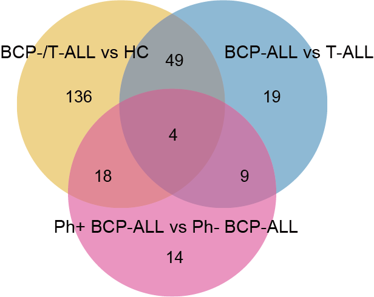
17.14 (S3 J) Boxplot
The boxplots depict the normalized peak area of these intersecting metabolites.
library(dplyr)
library(MNet)
library(ggplot2)
library(ggpubr)
#-------------------------------------------------------------------------------
# Step 1: Load data and conduct mlimma
#-------------------------------------------------------------------------------
## Significantly differential metabolites among defined groups
BMMCvsHC <- data.table::fread("result/Figure2/1.BMMCvsHC.txt") %>%
as.data.frame() %>%
dplyr::filter(abs(logFC) > 0.26) %>%
dplyr::filter(P.Value < 0.05)
BvsT <- data.table::fread("result/Figure2/2E_BvsT_all.txt") %>%
as.data.frame() %>%
dplyr::filter(abs(logFC) > 0.26) %>%
dplyr::filter(P.Value < 0.05)
Ph <- data.table::fread("result/Figure2/3.PhvsPh-_all.txt") %>%
as.data.frame() %>%
dplyr::filter(abs(logFC) > 0.26) %>%
dplyr::filter(P.Value < 0.05)
met_name <- intersect(intersect(BMMCvsHC$name,BvsT$name),Ph$name)
table(met_name)
## BMMC vs HC
meta_filter_BH <- data.table::fread("result/Figure2/S3F_BMMCvsHC.txt") %>%
dplyr::filter(name %in% met_name) %>%
dplyr::select(P.Value,name) %>%
dplyr::mutate(group=rep("BH",4))
## PBMC vs HC
meta_filter_PH <- data.table::fread("result/Figure2/S3F_PBMCvsHC.txt") %>%
dplyr::filter(name %in% met_name) %>%
dplyr::select(P.Value,name) %>%
dplyr::mutate(group=rep("PH",4))
## BMMC vs PBMC
meta_filter_BP <- data.table::fread("result/Figure2/S3F_BMMCvsPBMC.txt") %>%
dplyr::filter(name %in% met_name) %>%
dplyr::select(P.Value,name) %>%
dplyr::mutate(group=rep("BP",4))
meta_filter_all <- rbind(meta_filter_BH,meta_filter_BP,meta_filter_PH) %>%
dplyr::mutate(name=factor(name,levels=met_name)) %>%
dplyr::arrange(name)
write.table(meta_filter_all,"result/Figure2/S3J_meta_groupcomparison.txt",sep = "\t",quote = F,row.names = F)
#-------------------------------------------------------------------------------
# Step 2: Boxplot
#-------------------------------------------------------------------------------
dat <- data.table::fread("raw_data/cell_dat_final_reuslt_v0329.txt") %>%
as.data.frame() %>%
tibble::column_to_rownames("label") %>%
dplyr::select(all_of(sample_info1$METc_BM_D0_ID),all_of(sample_info2$METc_PB_D0_ID),starts_with("H"))
group <- c(rep("A",length(sample_info1$METc_BM_D0_ID)),rep("P",length(sample_info2$METc_PB_D0_ID)),
rep("HC",length(grep("H",names(dat)))))
dat_filter <- dat %>%
tibble::rownames_to_column("label") %>%
dplyr::filter(label %in% met_name) %>%
tibble::column_to_rownames("label")
dat_filter <- myscale(log2(dat_filter+1),method="raw_zscore")%>%
t() %>%
as.data.frame()
dat_filter$group <- group
dat_melt <- reshape2::melt(dat_filter,id="group")
plot_list <- list()
for (i in 1:length(met_name)) {
dat_melt_filter <- dat_melt %>%
dplyr::filter(variable==met_name[i]) %>%
dplyr::mutate(group=factor(group,levels = c("HC","P","A")))
p <- ggplot(dat_melt_filter, aes(x=group,y = value,fill=group)) +
geom_boxplot(outlier.shape = NA)+
geom_point(position = "jitter",size=0.5,alpha=0.8)+
scale_fill_manual(values=c("#007DDB","#D01910","purple"))+
theme_classic()+
theme(legend.position="none")+ylim(-7,7)+
labs(x=NULL,y=NULL,title = unique(dat_melt_filter$variable))
plot_list[[i]] <- p
}
plot_grid <- cowplot::plot_grid(plotlist = plot_list, nrow = 1)
ggsave("result/Figure2/S3J_boxplot.pdf",plot_grid,width=8,height = 3)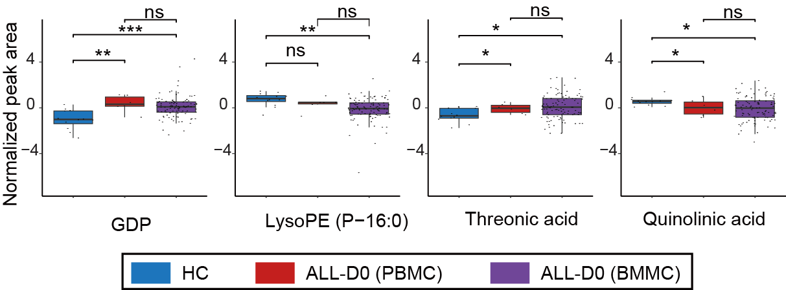
17.15 (S3 K) Pathway-based Analysis
Pathway-based analysis of metabolic changes between Ph+ BCP-ALL and Ph- BCP-ALL.
library(dplyr)
library(MNet)
library(ggplot2)
library(tidymass)
#-------------------------------------------------------------------------------
# Step 1: Load data and set parameters
#-------------------------------------------------------------------------------
metabolite_all <- data.table::fread("result/Figure2/3.PhvsPh-_all.txt") %>%
as.data.frame()
metabolite_diff <- metabolite_all %>%
dplyr::filter(abs(logFC) > 0.26) %>%
dplyr::filter(P.Value < 0.05)
kid <- readxl::read_excel("raw_data/cell_metabolite_info_all_v1109.xlsx") %>%
as.data.frame() %>%
dplyr::select(refmet_name,KEGG)
data_all <- metabolite_all %>%
dplyr::left_join(kid,by=c("name"="refmet_name")) %>%
dplyr::filter(KEGG!="None") %>%
dplyr::pull(KEGG)
dat <- metabolite_all %>%
dplyr::left_join(kid,by=c("name"="refmet_name")) %>%
dplyr::filter(KEGG!="None") %>%
dplyr::filter(P.Value < 0.05) %>%
dplyr::mutate(change=ifelse(logFC > 0.26,"increase",
ifelse(logFC < -0.26,"decrease","no sig")))
data_increase <- dat %>%
dplyr::filter(change=="increase") %>%
dplyr::pull(KEGG)
data_decrease <- dat %>%
dplyr::filter(change=="decrease") %>%
dplyr::pull(KEGG)
#-------------------------------------------------------------------------------
# Step 2: DA-score
#-------------------------------------------------------------------------------
da_result <- ePDAlyser(data_increase,data_decrease,data_all,sort_plot="category",
min_measured_num = 2,out="metabolite")
ggplot2::ggsave(da_result$p,filename = "result/Figure2/S3K_DA_score_all.pdf",
width=13,height=9)
openxlsx::write.xlsx(da_result$result,file="result/Figure2/S3K_DA_score_all.xlsx",rowNames = FALSE)
diff.kid <- metabolite_all %>%
dplyr::filter(P.Value <0.05) %>%
dplyr::filter(logFC > 0.26 | logFC < -0.26) %>%
dplyr::left_join(kid,by=c("name"="refmet_name")) %>%
dplyr::filter(KEGG!="None") %>%
dplyr::pull(KEGG) %>%
unique()
data("kegg_hsa_pathway", package = "metpath")
#Remove the disease pathway
pathway_class = metpath::pathway_class(kegg_hsa_pathway)
remain_idx = pathway_class %>%
unlist() %>%
stringr::str_detect("Disease") %>%
`!`() %>%
which()
pathway_database = kegg_hsa_pathway[remain_idx]
#-------------------------------------------------------------------------------
# Step 3: MSEA
#-------------------------------------------------------------------------------
result <- enrich_kegg(query_id = diff.kid,
query_type = "compound",
id_type = "KEGG",method = "hypergeometric",
pathway_database = pathway_database,
p_cutoff = 0.05,
p_adjust_method = "BH",
threads = 5)
msea_table <- result@result %>% dplyr::arrange(p_value) %>% data.frame()
tablefilter <- dplyr::filter(msea_table,p_value < 0.05)
write.csv(msea_table,"result/Figure2/S3K_MSEA_all.csv")
## Enrichment pathway visualization
da_filter <- da_result$result %>%
dplyr::filter(KEGG_pathwayid %in% tablefilter$pathway_id) %>%
dplyr::arrange(`Pathway Category`) %>%
dplyr::mutate(Pathway=factor(Pathway,levels = Pathway))
pathway_data <- PathwayExtendData %>%
dplyr::filter(type=="metabolite")
colp <- c("Amino acid metabolism" ="#1B9E77",
"Carbohydrate metabolism"="#D95F02",
"Glycan biosynthesis and metabolism"="#1F78B4",
"Metabolism of cofactors and vitamins"="#7570B3",
"Metabolism of terpenoids and polyketides"="#BC80BD",
"Metabolism of other amino acids"="#8DD3C7",
"Energy metabolism"="#E7298A",
"Lipid metabolism"="#66A61E",
"Nucleotide metabolism"="#E6AB02",
"Biosynthesis of other secondary metabolites"="#A6761D",
"Xenobiotics biodegradation and metabolism"="#666666")
p <- ggplot(da_filter)+
geom_point(aes(x=Pathway,y=DA_score,size=log2(Measured_members_num),color=`Pathway Category`))+
geom_pointrange(aes(x=Pathway,y=DA_score,ymin=0,ymax=DA_score,color=`Pathway Category`))+
scale_color_manual(values=colp)+
coord_flip()+
xlab(NULL)+
theme_bw()
ggsave("result/Figure2/S3K_PHpathway.pdf",p,width=8,height = 4)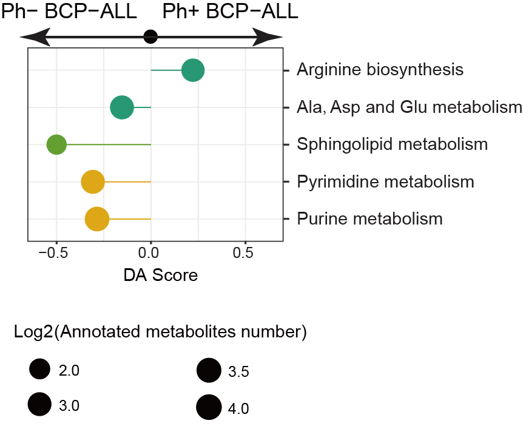